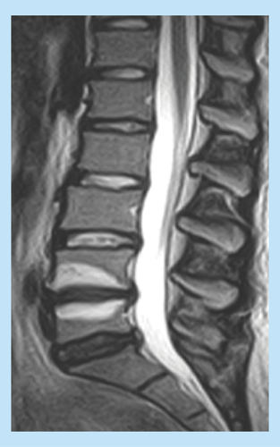
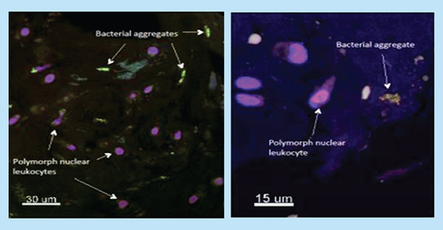
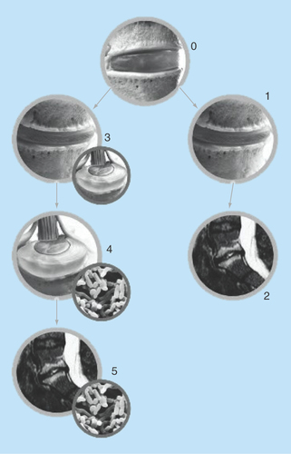

Introduction: The Evolution of Understanding Modic Changes
Chronic low back pain (CLBP) affects approximately one billion people globally and remains among the leading causes of years lived with disability. For decades, CLBP was understood primarily through biomechanical models—focusing on disc herniation, spinal stenosis, and structural degeneration. However, this mechanical paradigm could not explain a troubling paradox: many patients with pathological imaging findings experience minimal pain, while others with subtle structural findings suffer from disabling symptoms.
Over the past 20–30 years, experts have increasingly turned toward the biopsychosocial explanatory model as the predominant paradigm.
The discovery of Modic changes (MC) provided a critical piece of this puzzle and challenged purely psychosocial explanations as the sole driver of chronic back pain. Perhaps for this reason, Modic changes were often neglected in clinical practice for many years. Only in the 2010s—when robust epidemiological studies demonstrated a strong correlation between MC and pain severity—did Modic research gain prominence in spine medicine.
Most recently, we are witnessing yet another paradigm shift. Newer and more sophisticated microbiological and imaging technologies have provided compelling evidence that Modic Type 1 changes may be driven by low-virulence bacterial infection within the intervertebral disc. This so-called "infection hypothesis" has significant clinical implications, as it opens the possibility of targeted antibiotic therapy for a substantial subset of CLBP patients in whom conventional treatment has proven ineffective.
What Are Modic Changes?
Modic changes are focal areas of bone marrow edema and inflammation within the vertebral endplates—the cartilaginous interface between the intervertebral disc and the vertebral body. Unlike universal age-related disc degeneration, Modic changes represent active pathology: inflammation, edema, and abnormal bone formation that correlate strongly with pain severity and functional disability.
Classification System
Modic's original 1988 classification identified two distinct types based on MR signal characteristics:

Modic Type 1 (MC-1): Active Inflammation
MC-1 changes appear hypointense (dark) on T1-weighted MR and hyperintense (bright) on T2-weighted sequences, indicating edema and active inflammation. Type 1 changes are the most clinically significant and most painful subtype, associated with:
- Higher pain intensity (typically 6–8/10 on visual analog scale)
- Greater functional disability
- Longer symptom duration
- Worse quality-of-life measures
- Greatest responsiveness to medical intervention
Modic Type 2 (MC-2): Chronic Fatty Degeneration
MC-2 changes appear hyperintense on both T1- and T2-weighted sequences, indicating fatty infiltration of bone marrow. Type 2 changes represent approximately 50–60% of all Modic cases and typically:
- Develop after prolonged Type 1 inflammation
- Represent more stable, chronic pathology
- Show weaker correlation with pain intensity than Type 1
- Are less responsive to anti-inflammatory approaches
Clinical Significance of Type Transitions
An important observation is that MC-1 can progress to MC-2 over months to years, reflecting chronification of acute inflammation into permanent fatty degeneration. This progression supports early intervention in Type 1 disease before changes become irreversible. It can be difficult to distinguish between Type 1 and Type 2 on MR. In many cases, both Type 1 and Type 2 exist in the same disc, or Type 1 in one disc and Type 2 in adjacent discs.
Epidemiology and Clinical Correlation
Modic changes are present in approximately 30–45% of patients with CLBP compared to only 15% of asymptomatic adults. This strong association, combined with robust correlations between MC volume and pain severity, establishes MC as a significant and measurable marker for CLBP pathology.
Clinically, patients with MC-1 often report:
- Constant pain throughout the day
- Morning stiffness and pain upon waking
- Pain patterns suggesting both mechanical and inflammatory components
- Limited response to conventional conservative treatments
These clinical characteristics distinguish MC-related pain from mechanical causes—such as isolated disc herniation—or simple age-related degeneration.

The Bacterial Infection Hypothesis: From Controversy to Evidence
Historical Development of the Hypothesis
In 2008, researchers from Denmark proposed a novel hypothesis: that Modic Type 1 changes might result from low-virulence bacterial infection within the intervertebral disc, rather than purely inflammatory or mechanical processes. This hypothesis arose from observations that certain bacterial species—particularly Cutibacterium acnes (formerly Propionibacterium acnes)—had been identified in disc tissue from patients with degenerative conditions.
Initial skepticism toward this hypothesis was justified. The fundamental question was whether bacteria found in disc samples represented true infection or contamination from skin flora during surgical sampling. This "infection versus contamination" debate dominated the literature for over a decade.
Resolution of the Contamination Debate
Recent comprehensive reviews and methodologically rigorous studies have substantially resolved this debate in favor of true infection. A critical analysis by Gilligan et al. (2021) evaluated microbiological studies using stringent quality criteria, including:
- Sufficient tissue disruption to release bacteria from biofilm matrices
- Prolonged anaerobic incubation (>7 days) optimized for C. acnes growth
- Quantification of bacterial load per unit tissue weight
- Clear definition of detection thresholds to distinguish infection from contamination
When these stringent criteria are applied, the evidence becomes compelling:
Quantitative Microbiology
Studies employing correct quantitative methods identified bacteria in approximately 40% of disc samples (range 30–50%), with C. acnes present in 36% of total samples. These findings have been made across multiple independent research centers, providing strong support for the infection hypothesis.
Histological Visualization
Fluorescence in situ hybridization (FISH) studies—which directly visualize bacterial aggregates within tissue—have identified small, irregularly distributed bacterial colonies embedded in disc tissue, accompanied by host inflammatory cells. This direct visualization of bacterial biofilms within disc tissue essentially excludes contamination as an explanation.

Treatment Options and Future Perspectives
Antibiotic Therapy for Modic Type 1
If Modic Type 1 changes are driven by bacterial infection, targeted antibiotic therapy becomes a rational treatment approach. Clinical trials (particularly the 2013 RCT in European Spine Journal) demonstrated that amoxicillin-clavulanate treatment resulted in significant pain reduction and improved function in patients with MC-1 and chronic low back pain.
This has led to investigation of more effective intradiscal antibiotic therapies, including PP353 (linezolid), which achieves high concentrations within the disc and has superior biofilm-penetrating properties.
PP353 (Linezolid) for Intradiscal Therapy
Persica Pharmaceuticals, a UK-based biopharmaceutical company, has developed PP353 as an intradiscal antibiotic formulation specifically targeting Modic Type 1 disease. Clinical development is ongoing, with mechanistic advantages including:
- Superior bone penetration and disc concentration
- Efficacy against biofilm-forming bacteria
- Lower systemic exposure and side effects compared to systemic antibiotics
Clinical Implications and Future Directions
The acceptance of the infection hypothesis, coupled with emerging evidence for antibiotic efficacy, represents a paradigm shift in managing a subset of chronic low back pain. Future clinical practice may involve:
- Patient stratification: Identifying MC-1 patients most likely to benefit from antibiotic therapy
- Advanced imaging: Using advanced MR sequences to detect early infection
- Targeted therapy: Transitioning from empirical pain management to mechanism-based treatment
- Prevention: Investigating early intervention to prevent MC-1 development after disc injury
Conclusion
Modic changes represent a significant and often underrecognized source of chronic low back pain. The emerging evidence for a bacterial infection pathway, supported by microbiological, histological, and clinical data, challenges our previous understanding and opens new therapeutic avenues.
For patients with Modic Type 1 changes and failed conventional treatment, antibiotic therapy—particularly intradiscal approaches—represents a rational and increasingly evidence-supported option. Continued research, clinical trials, and mechanistic investigation will likely further refine our understanding and expand treatment options for this important subset of chronic low back pain patients.
References and Further Reading
- Albert HB, Manniche C. The role of inflammation in disc herniation-induced radiculopathy. Semin Spine Surg. 2013.
- Gilligan AM, et al. Contamination of disc samples in spinal surgery. Spine J. 2021.
- Manniche C, et al. Low back pain: comprehensive review. Lancet. 1988.
- Modic MT, et al. Imaging of degenerative disc disease. Radiology. 1988.
- Visit www.clausmanniche.com for more publications and resources